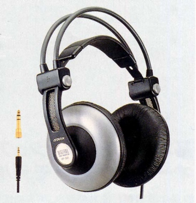
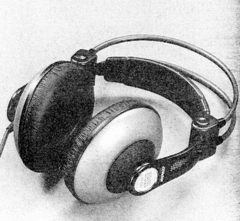

HP-DX1


■価格 12,000円■型式 ダイナミック型密閉式■振動板 50�o■インピーダンス 45Ω■再生周波数帯域 5-30,000Hz■許容入力 1,000mW■感度 105dB/mW■コード 3.5mOFCリッツ線 ステレオ２ウェイプラグ■重量 300g(コード含まず）■発売 1998年5月■販売終了■備考 パワードネオジウムマグネット採用フィットネスコントローラ採用入力コードは4線式
ビクターのインデックスへ